Deep Neural Networks¶
All deep-learning applications in RocketML are built into an executable called rmldnn. To launch a deep-learning run from the command line, one has to do:
rmldnn [--app=<application>] --config=<json_config_file>
Every possible aspect of how the run is configured must be passed in the json file specified with the --config command-line argument.
This file controls everything from log file names to hyperparameter values, all the way to details of every layer
in the network. It is composed of several sections (json objects) which configure different aspects of the deep-learning run (e.g., optimizer
parameters, data loader type, etc), some of which are specific to the type of application being executed.
Configuration¶
The json file must contain one single object named neural_network, inside which all configuration will reside:
{
"neural_network": {
"outfile": "log_file.txt",
"num_epochs": 100,
"data": {
...
},
"optimizer": {
...
},
"loss": {
...
},
"layers": {
...
}
}
}
The neural_network object contains several sub-objects (sections) which will be discussed below, in addition to
a few basic parameters:
- outfile: Base name for the output files produced by the run (with loss values, accuracies, etc). If not provided, no output files are created.
- num_epochs: How many total epochs to run for (default: 1).
- debug: Whether to enable debug output. The specific behavior (i.e., what debug data exactly is created) depends on the application. For instance, if debug = true, the image segmentation application will write out images produced during inference.
- debug_interval: How often to write out debug info (in terms of number of epochs).
Optimizer section¶
This section configures the optimizer for the neural network, which can be selected with the parameter type.
RocketML supports the most important first-order algorithms available in PyTorch
(module torch.optim),
as well as a Hessian-based second-order optimizer.
Each optimizer type has its own set of supported hyper-parameters:
SGD:
- learning_rate: Base learning rate (default: 0.01)
- momentum: Momentum factor (default: 0)
- weight_decay: Weight decay (L2 penalty) (default: 0)
- dampening: Dampening for momentum (default: 0)
- nesterov: Enables Nesterov momentum (default: false)
Adagrad:
- learning_rate: Base learning rate (default: 0.01)
- lr_decay: Learning rate decay (default: 0)
- weight_decay: Weight decay (L2 penalty) (default: 0)
Adam and AdamW:
- learning_rate: The base learning rate (default: 0.01)
- beta1 and beta2: Coefficients used for computing running averages of gradient and its square (defaults: 0.9 and 0.999)
- weight_decay: weight decay (L2 penalty) (default: 0)
- eps: Term added to the denominator to improve numerical stability (default: 1e-8)
- amsgrad: Whether to use the AMSGrad variant of this algorithm (default: false)
RMSprop:
- learning_rate: Base learning rate (default: 0.01)
- momentum: Momentum factor (default: 0)
- alpha: Smoothing constant (default: 0.99)
- eps: Term added to the denominator to improve numerical stability (default: 1e-8)
- centered: If true, compute the centered RMSProp, and normalize the gradient by its variance (default: false)
- weight_decay: Weight decay (L2 penalty) (default: 0)
LARS (see https://arxiv.org/pdf/1708.03888.pdf):
SGD-based first-order optimizer suitable for large-batch training. It accepts all parameters of the SGD optimizer, plus the LARS coefficient:
- eta: LARS’s coefficient 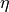, or trust-ratio multiplier (default: 1e-3)
LAMB (see https://arxiv.org/pdf/1904.00962.pdf):
Adam-based first-order optimizer suitable for large-batch training. It accepts all parameters of the Adam optimizer.
Hessian:
- max_iterations: Maximum number of iterations (default: 2000)
- max_func_eval: Maximum number of objective function evaluations (default: 4000)
- absolute_tolerance: Absolute tolerance (default: 1e-8)
- relative_tolerance: Relative tolerance (default: 1e-8)
Therefore, a typical example of invoking the Adagrad optimizer would look like this:
"optimizer": {
"type": "Adagrad",
"learning_rate": 0.001,
"lr_decay": 1e-5
}
Layers section¶
This section allows for detailed specification of all layers in the neural network, as well as the connections between them.
The syntax is supposed to follow closely the one used by Keras, which allows exporting a programmatically built neural network
as a json file – see the Keras documentation. Not all functionality exposed by Keras has been integrated into
RocketML, though, either due to being low priority, or because they would require support for different network architectures
not currently available in rmldnn.
One can either put the network description on a separate file (e.g., model.json) and pass the file name to RocketML configuration,
"layers": "../path/model.json"
or enter it directly as an array of json objects, one for each layer:
"layers": [
{
"class_name": "Conv2D",
"config": {
"name": "layer1",
"trainable": true,
...
}
},
{
"class_name": "MaxPooling2D",
"config": {
"name": "layer2",
"trainable": true,
...
}
},
...
]
The configuration parameters available for each layer are, of course, specific to the functionality of that particular layer.
Please refer to the Keras documentation for details. For example, a two-dimensional convolutional layer is represented in Keras
by a Conv2D object, which accepts the following configuration parameters, among others:
- filters: The number of channels of the output (i.e., number of output filters in the convolution)
- kernel_size: An integer or list of 2 integers specifying the height and width of the 2D convolution window
- strides: An integer or list of 2 integers specifying the strides of the convolution along the height and width
- padding: An integer or list of 2 integers specifying the amount of zero-padding along the height and width. Also accepts a string with either same or valid (Tensorflow notation)
- dilation_rate: An integer or list of 2 integers specifying the dilation rate to use for dilated convolution
- use_bias: A boolean indicating whether the layer uses a bias vector
- trainable: If set to false, the layer gets frozen, i.e., its parameters are not updated during training. This can be applied to all trainable layers (not only Conv2d), and might be useful when loading a pre-trained model.
Therefore, in order to add such a layer to the network in RocketML, the following json object could be used:
{
"class_name": "Conv2D",
"config": {
"name": "conv_layer_1",
"filters": 64,
"kernel_size": [7, 7],
"strides": [2, 2],
"padding": "valid",
"dilation_rate": [1, 1],
"use_bias": true
"activation": "ReLU",
"trainable": true
},
"inbound_nodes": [
[
[
"input_1",
0,
0,
{}
]
]
]
}
The parameter inbound_nodes is used to indicate which layers feed into conv_layer_1. If not specified, RocketML assumes
that the output of the previous layer becomes the input of the next layer. This parameter can be a list of layers, which must all feed into a
so-called merge layer, which then combines the incoming data tensors into a single tensor (via either concatenation, addition, or subtraction).
Loss section¶
This section specifies which loss function to use for the neural network. The loss function computes some kind of metric that estimates the error (loss) between the network result for a given input and its corresponding target.
The choice of loss function must be consistent with the network design, in particular, with the last layer in the network and its activation. For example, the Negative Log-Likelihood (NLL) loss function expects its input to contain the log-probabilities of each class. This can be accomplished, for example, by terminating the network with a Log-Softmax activation function.
rmldnn currently supports several types of loss functions, some of which are directly available in PyTorch, while others are
custom implementations:
- nll: Log-Likelihood (NLL) loss function. Useful to train a classification problem with
 classes. Accepts an optional
list of weights to be applied to each class.
classes. Accepts an optional
list of weights to be applied to each class. - bce: Binary cross entroy loss function. Useful for measuring the reconstruction error in, for example, auto-encoders.
- mse: Mean squared error (squared L2 norm) loss function.
- Dice: Computes the Dice coefficient (a.k.a. F1-score) between output and target.
- Jaccard: Computes the Jaccard score (a.k.a. Intersection-over-Union, or IoU) between output and target.
- Focal: Computes the focal loss, a generalization of the cross entropy loss suitable for highly imbalanced classes.
- Lovasz: Computes an optimization of the mean IoU loss based on the convex Lovasz extension of sub-modular losses.
- Wasserstein: Used exclusively in GANs to maximize the gap between scores from real and generated samples (
--app=gan) - YOLOv3: Used exclusively for object detection (
--app=obj) - Burgers_pde: Loss function encoded as an invariant (PDE + boundary condition) of the Burgers’ 1+1-dimensional
partial differential equation (
--app=pde). - Poisson2D_pde: Invariant loss function for the 2D Poisson PDE (
--app=pde). - Poisson3D_pde: Invariant loss function for the 3D Poisson PDE (
--app=pde).
A typical way to engage, for example, the NLL loss function would be:
"loss": {
"function": "NLL",
"weight": [0.3, 0.4, 0.5, 0.6, 0.7, 0.8]
}
Data section¶
This is the section where the types of training and test data are configured, in particular, what specific data loader will be used to feed data into the neural network, as well as how that data will be split into mini-batches, how many samples will be used for training and evaluation, etc.
The following data types are currently supported in RocketML:
- mnist: Loads data from the MNIST handwritten digits database in binary format.
- images: Loads image files which can be used for classification (images and labels), segmentation (images and masks), autoencoders, etc.
- labels: Automatically determines class labels based on the names of the directories where sample input files are located (for classification only).
- numpy: Loads data from NumPy arrays in either
.npyformat (one sample per file) or.npzformat (multipler samples per file). Also supports the data slicing capability described below. - pde: Generates initial conditions to be used with a DNN-based partial differential equation solver.
The following parameters apply to all data loader types, and are critical to configuring the run:
- input_type: Input data type.
- target_type: Target data type.
- type: If input and target types are the same, this parameter can be used for simplicity.
- input_path: Path to directory with training input samples. If not defined, training step is skipped.
- target_path: Path to directory with training target samples. Required only for certain applications (e.g., segmentation)
- test_input_path: Path to directory with test (evaluation) input samples. If not defined, evaluation step is skipped.
- test_target_path: Path to directory with test target samples. If omitted, inference runs without targets (loss is not computed).
- batch_size: Number of training samples per mini-batch (default is 64).
- test_batch_size: Number of test (evaluation) samples per mini-batch (default is 64).
- preload: Whether samples will be read up-front from disk and loaded from memory during training/eval (default is false).
- target_is_mask: If set to true, target samples are handled as discrete (integer) data, e.g., operations like rotation and resize will apply a nearest-neighbor interpolation scheme (default is false).
- transforms: Data transform operations that can be applied to the samples – see details below.
This section also supports parameters that are specific to the type of data being loaded. For example, grayscale is a parameter that applies to image data only, but not to numpy arrays. More details on how to configure each type of data loader will be shown in the applications section.
Slicers sub-section¶
The numpy data loader supports extracting the input samples from a single large numpy array by chopping it off into smaller
blocks of configurable sizes. The samples obtained can have equal or lower dimensionality as the original data, as long as the neural
network can handle their shapes. For example, if the input numpy array is a 3D block of shape  ,
one could chop it into smaller blocks of shape
,
one could chop it into smaller blocks of shape  ), where
), where  , 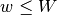 and
, 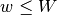 and  ,
or slice it into 2D tiles along the 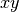-plane with shape
,
or slice it into 2D tiles along the 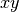-plane with shape  ,
or even extract 1D lines of length 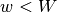 along the
,
or even extract 1D lines of length 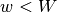 along the  -axis.
Multiple slice sets can be defined, each with its own slice size and orientation (the dimensionality of slices across all sets
must be the same, though, since the neural network is common to all). The configuration below shows an example of how to extract
2D samples from a 3D input array using 2 slice sets:
-axis.
Multiple slice sets can be defined, each with its own slice size and orientation (the dimensionality of slices across all sets
must be the same, though, since the neural network is common to all). The configuration below shows an example of how to extract
2D samples from a 3D input array using 2 slice sets:
"data": {
...
"slicers": [
{
"name": "yz-slices",
"sizes": [1, 131, 1001],
"padded_sizes": [1, 144, 1008],
"discard_remainders": false,
"transpose": false
},
{
"name": "xz-slices",
"sizes": [540, 1, 1001],
"padded_sizes": [560, 1, 1008],
"discard_remainders": false,
"transpose": true
}
]
}
The following options can be set:
- name: Slice set name (optional)
- sizes: Slice sizes (required). Expects N elements for N-dimensional input data. Setting an element to 1 flattens the slice along that dimension, reducing the dimensionality of the input samples into the network.
- padding: Symmetric padding to be added along each dimension (defaults to zero). If
![\textrm{sizes=} [h,w,d]](_images/math/acea77da57466a571cff27ff46b7f596da02a3be.png) and
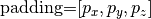, then slices will have shape 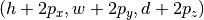.
Cannot be specified together with padded_sizes.
and
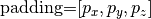, then slices will have shape 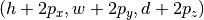.
Cannot be specified together with padded_sizes. - padded_sizes: Total slice size after padding (defaults to sizes). Useful in case the desired padding is asymmetric. Cannot be specified together with padding.
- strides: Displacements used when slicing in each direction (defaults to sizes). If smaller than sizes, then slices will overlap.
- discard_remainders: Whether to discard regions of the input data which are left over after slicing (default is false, i.e., leftovers are padded up to sizes and added to the sample list).
- transpose: Whether to transpose each slice before and after network traversal. Only valid for 2D slices (default is false).
The inference process, including the addition and removal of padding (as well as optional slice transposition), is depicted in the figure below:

HDF5 output writing
The predictions obtained by running inferences on the slices can be assembled back into a multi-dimensional array and saved to disk as an HDF5 file. Each slice set will result in one dataset in the HDF5 data-structure. In order to enable HDF5 writing, set the following:
"data": {
...
"hdf5_outfile": "prediction.h5"
...
}
The process of writing data into the HDF5 file is performed in parallel (in case of multi-process execution) and asynchronously, i.e., it happens concurrently with inference in order to maximize throughput. The entire infrastructure for data slicing, inferencing and assembling is depicted in the figure below.

Restrictions:
- The input numpy array must have no channel dimension (i.e., the data must be single-channel with only spatial dimensions).
- The shape of the output tensor produced by the network must be equal to the input shape plus en extra channel dimension.
- Only 2D slices can be transposed.
Transforms sub-section¶
The image and numpy data loaders support operations that can be applied to individual 2D samples during training. Notice that:
- Operations which are stochastic in nature (e.g., random rotation or random zoom) result in different samples being produced at different epochs, thus providing a mechanism for data augmentation that should enhance training convergence.
- Operations which require resizing (e.g., rotation, zooming, resize) apply a linear interpolation scheme by default. If the targets contain discrete data (e.g., masks with segmentation labels), one should set
target_is_maskto true (see Data section), so that a nearest-neighbor interpolation scheme is used for them instead.
The following transformations are supported:
resize: Resizes the sample to a given size using bilinear interpolation.
Usage:
resize: [Sx, Sy], where 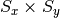 is the desired sample size.center_crop: Crops the sample at the center to a given output size.
Usage:
center_crop: [Sx, Sy], where is the output size.jitter_crop: Crops the sample in each direction
 by 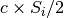,
where
by 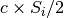,
where  is a random variable uniformly sampled from 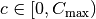.
is a random variable uniformly sampled from 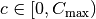.Usage:
jitter_crop: Cmaxrandom_horizontal_flip: Randomly flips the sample horizontally with a given probability
 .
.Usage:
random_horizontal_flip: prandom_vertical_flip: Randomly flips the sample horizontally with a given probability
.Usage:
random_vertical_flip: prandom_zoom: Randomly zooms in by in each direction
, where
is a random variable uniformly sampled from .Usage:
random_zoom: Cmaxrotate: Rotates the sample clockwise by a given fixed angle.
Usage:
rotate: phi, where is the rotation angle.
is the rotation angle.random_rotate: Rotates the sample by a random angle sampled uniformly between
 and 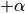.
and 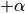.Usage:
random_rotate: alphaconvert_color: Converts the image to a different color scheme (given as an openCV color conversion code).
Usage:
convert_color: code
normalize: Normalizes the resulting tensor using a given mean
 and
standard deviation
and
standard deviation  , that is, 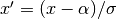.
, that is, 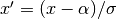.Usage:
normalize: {"mean": alpha, "std": sigma}
Below is an example of how to use some of the above transforms.
Operations are applied in the same order as they are listed.
For that reason, if resize is present, it should usually be the last operation applied,
so that all samples going into the neural network have the same size.
"data": {
...
"transforms": [
{ "normalize": { "mean": 0.5, "std": 0.5 } },
{ "convert_color": "BGR2RGB" },
{ "random_horizontal_flip": 0.5 },
{ "jitter_crop": 0.1 },
{ "random_rotate": 20 },
{ "resize": [416, 416] }
]
}
The operations listed under transforms will apply to both input and target samples. In order to specify different
operations for inputs and targets, the settings input_transforms and target_transforms should
be used. For example, if one needs to resize inputs to a different size as the targets, one could do:
"data": {
...
"input_transforms": [
{ "resize": [128, 128] }
],
"target_transforms": [
{ "resize": [16, 16] }
]
}
Special-purpose transforms:
- random_patches: Extracts random square patches from the input samples, and makes target samples from those patches. This enables unsupervised training of context encoder networks that learn visual features via inpainting.
This transform can be configured with the number of random patches and their linear size, as for example:
"transforms": [
{ "random_patches": { "number": 100, "size": 10 } }
]
In this case, pairs or input and target samples with 100 patches of size 10x10 are generated during training, like this one:
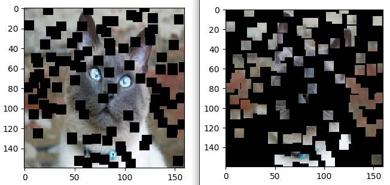{kind=link}
Checkpoints section¶
In order to save model checkpoints out to disk during training, one must add the checkpoints object to the json config file.
This section can also be used to load the model from file before running training. Accepted model file formats are
.pt (from libtorch) and .h5 (HDF5 from Keras/TF).
"checkpoints": {
"save": "./checkpoint_dir/"
"interval": 10,
"load": "./model_checkpoint_100.pt"
}
- save: The directory to save model checkpoint files into.
- interval: When set to
 , will save model checkpoints at every epochs (defaults to 1).
, will save model checkpoints at every epochs (defaults to 1). - load: A previously created checkpoint file to load the model from.
Applications¶
Image classification¶
In order to train a network for image classification purposes, one must use an image data loader, whose configuration would look something like this:
"data": {
"input_type": "images",
"target_type": "labels",
"input_path": "/path/to/training_data/",
"test_input_path": "/path/to/evaluation_data/",
"batch_size": 128,
"test_batch_size": 200,
"preload": true,
"input_grayscale": false,
"target_grayscale": true,
"transforms": [
{ "resize": [28, 28] }
]
}
The parameters input_grayscale and target_grayscale are specific to the image data loader, and
control whether input and target images should be converted to single-channel grayscale (default is false).
If the same behavior is desired for both inputs and targets,
the single parameter grayscale can be used instead for simplicity.
Specifying target_type: labels triggers the generation of class labels based on directory names.
This requires each image file to be inside a directory whose name uniquely identifies that image’s class.
(If that is not convenient, one can instead use the parameters training_tag/testing_tag to indicate a directory
anywhere in the path underneath which the class name can be found.)
The labels data loader generates targets which are 1D tensors containing a class index (label) in the
range ![[0, C]](_images/math/582627475467c6d96840a3e9eef5a39bfbdb90c7.png) for each input image in the mini-batch, where is the number of classes. This requires
the loss function to be like the NLL, which expects a target with such shape.
for each input image in the mini-batch, where is the number of classes. This requires
the loss function to be like the NLL, which expects a target with such shape.
Image segmentation¶
Image segmentation works similarly to classification, except that a target image (mask) must be provided instead of
a label for each training example. While the label is a number that is deduced automatically from the input images’
directory names, the target images have to be provided explicitly by means of the target_path
and test_target_path parameters of the data loader. These specify the directories where the training and evaluation
target images (masks) are located, respectively.
Also, since the input and target types are the same in this case (i.e., images), one can simply specify type: images,
instead of passing both input_type and target_type.
The remaining parameters in the data section are the same as for image classification:
"data": {
"type": "images",
"input_path": "/path/to/training_images/",
"target_path": "/path/to/training_masks/",
"test_input_path": "/path/to/evaluation_images/",
"test_target_path": "/path/to/evaluation_masks/"
...
}
The target images must be of the same size and depth as the output of the network, and a loss function that expects its input and target to be of the same shape (e.g., MSE, BCE, etc) must be used.
PDE solvers¶
These applications can solve partial differential equations by using the PDE function itself, as well as boundary and initial conditions, as constraints that are enforced by the loss function. It currently supports:
- the 1+1D Burgers’ equation (one spatial dimension plus time) with boundary conditions
 and
and 
- the 2D stochastic Poisson equation with boundary conditions
 ,
,  and
and  on other boundaries
on other boundaries - the 3D stochastic Poisson equation with boundary conditions
 ,
,  and on other boundaries
and on other boundaries
Burgers’ PDE solver
The Burgers’ equation in one spatial dimension can be written as

where  is the diffusion coefficient. When
is the diffusion coefficient. When  , the Burgers’ equation is said to be inviscid.
, the Burgers’ equation is said to be inviscid.
The training examples for the network are sets of boundary condition functions  with the form
with the form

as well as linear supperpositions of these raised-cosine functions,
where  is the domain size in the x-dimension, and the frequency is sampled from the
interval
is the domain size in the x-dimension, and the frequency is sampled from the
interval ![[c_{min}, c_{max}]](_images/math/2a3040fb249c53d9128e9734ef9009c3dc86a0ef.png) using one of the supported distributions (see
using one of the supported distributions (see bc_type parameter below).
The data loader in this case is, therefore, a PDE boundary condition generator, which accepts the following configuration:
"data": {
"type": "pde",
"domain_size": 128,
"num_examples": 64,
"batch_size": 16,
"num_test_examples": 8,
"test_batch_size": 4,
"bc_frequency": [3, 6],
"bc_type": "random_uniform"
}
The following parameters can be set:
domain_size (required): The size of the domain in
 (the number of time steps is determined by the network).
(the number of time steps is determined by the network).num_examples: The total number of training examples (i.e., initial conditions). If omitted, the training step is skipped.
batch_size: The number of examples per mini-batch during training (defaults to 64).
num_test_examples: The total number of evaluation examples. If omitted, the evaluation step is skipped.
test_batch_size: The number of examples per mini-batch during evaluation (defaults to 64).
bc_frequency: A range
![\mathcal{R} = [c_{min}, c_{max}]](_images/math/73047dee1f1c22af997061df225c786b174fd5ff.png) for the initial condition frequencies .
for the initial condition frequencies .bc_type: The method for how to sample the frequencies from
 . Can have the following values:
. Can have the following values:random_uniform: Selects
randomly from
with a uniform probability distribution  .
.fixed_uniform: Selects
sequentialy from evenly spaced points in , i.e.,
where
![i \in [0, \textrm{num-examples} - 1]](_images/math/2ce06425ced8128644dde6a56483170c03460a35.png) .
.
The loss function configuration depends on the specific equation being solved.
For Burgers’ PDE, one must set the parameter function as Burgers_PDE,
and the following additional parameters are supported:
"loss": {
"function": "Burgers_PDE",
"diffusion_coeff": 0.01,
"boundary_factor": 64
}
- diffusion_coeff: The value of (defaults to zero, i.e., inviscid Burgers)
- boundary_factor: A multiplier for the boundary + initial condition terms relative to the PDE term. Experiments have shown that a value of 64 works well (defaults to 1).
2D/3D Poisson PDE solver
The Poisson equation is defined as

where  is the diffusivity function. The forcing function
is the diffusivity function. The forcing function  is assumed to be zero.
The loss function must be set to
is assumed to be zero.
The loss function must be set to Poisson2D_PDE or Poisson3D_PDE:
"loss": {
"function": "Poisson2D_PDE"
}
To run rmldnn with any of the PDE solver loss functions, add the parameter --app=pde to the command line:
rmldnn --app=pde --config=<json_config_file>
Transfer Learning¶
Transfer learning can be realized in rmldnn by leveraging the checkpointing system described above,
and by making (hopefully small) changes to the network files. When training a network on dataset
 , enable checkpoint saving with
, enable checkpoint saving with
"checkpoints": {
"save": "./checkpoints_D1/"
"interval": 10,
}
Now, to transfer learning when training the same network with a new dataset  , load the model
saved during training:
, load the model
saved during training:
"checkpoints": {
"load": "./checkpoints_D1/model_checkpoint_100.pt",
"save": "./checkpoints_D2/"
"interval": 10,
}
Two main use cases can occur depending on the type of network:
1. Purelly convolutional networks
In this case, the layers of the network are agnostic to the training sample sizes (as long as the tensors have the same rank) and, therefore, do not need to be changed when transfering learning. The only adjustment needed in the network file is the input size, usually defined in the first layer (e.g., InputLayer):
{
"class_name": "InputLayer",
"config": {
"batch_input_shape": [
null,
128,
128,
1
],
"dtype": "float32"
"name": "input_1",
},
"inbound_nodes": []
}
2. Networks with fixed-size layers
If the network contains layers whose configuration depends on the size of the training samples
(e.g., Dense), then the parameters for those layers cannot be transferred from a model trained
on a dataset with different size samples. In this case, those layers have to be renamed in the
network file and retrained with the new dataset. When loading the model, rmldnn will warn
about layers whose parameters cannot be transfered:
Loading model checkpoint from file: ./checkpoints_D1/model_checkpoint_100.pt
Skipping layer dense_128_1: not found in model
Skipping parameter dense_128_1.weight: not found in model
Skipping parameter dense_128_1.bias: not found in model
...
Application: multigrid training
One can leverage transfer learning to emulate the multigrid method for solving PDEs by training models of increasing resolution which are initialized from lower resolution ones. If the network is fully convolutional, a model trained at a certain resolution (data size) can be completely re-utilized when going to higher resolution (i.e., all layer parameters transfered). And even if the network changes at different resolutions, at least part of the model can perhaps be re-utilized.
For example, in order to train a UNet whose depth increases with resolution, one could simply add extra layers to the top part of the “U” and keep the bottom layers unchanged (see figure). The added layers will be trained from scratch, but the majority of the network (bottom part of the “U”) will be initialized from the model trained at lower resolution.

Reference¶
This is the complete list of currently supported network operations in RocketML:
- Core layers:
- Input
- Dense
- Convolution layers:
- Conv1D
- Conv2D
- Conv3D
- DepthwiseConv1D
- DepthwiseConv2D
- DepthwiseConv3D
- Conv1DTranspose
- Conv2DTranspose
- Conv3DTranspose
- Pooling layers:
- MaxPooling1D
- MaxPooling2D
- MaxPooling3D
- AveragePooling1D
- AveragePooling2D
- AveragePooling3D
- GlobalMaxPooling1D
- GlobalMaxPooling2D
- GlobalMaxPooling3D
- GlobalAveragePooling1D
- GlobalAveragePooling2D
- GlobalAveragePooling3D
- Normalization layers:
- BatchNormalization
- InstanceNormalization
- LayerNormalization
- Regularization layers:
- Dropout
- SpatialDropout2D
- SpatialDropout3D
- Reshaping layers:
- Reshape
- Flatten
- UpSampling1D
- UpSampling2D
- UpSampling3D
- ZeroPadding1D
- ZeroPadding2D
- ZeroPadding3D
- Cropping1D
- Cropping2D
- Cropping3D
- Merging layers
- Add
- Subtract
- Multiply
- Average
- Concatenate
- Activation layers:
- ReLU
- LeakyReLU
- Softmax
- Log_Softmax
- Sigmoid
- Tanh
- Swish